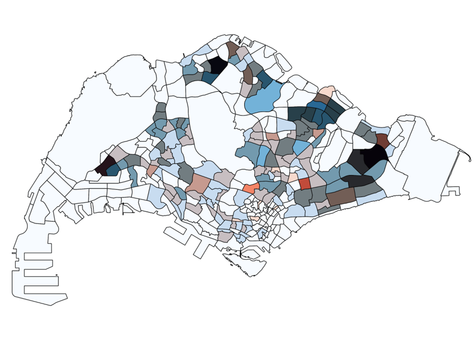
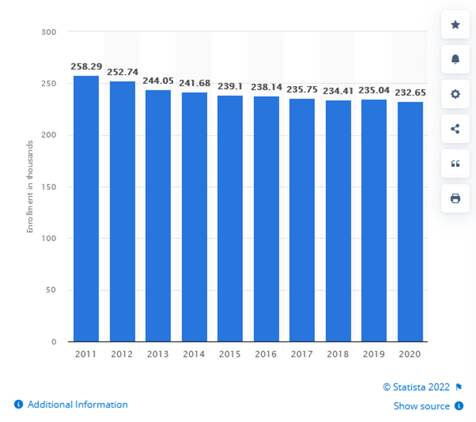
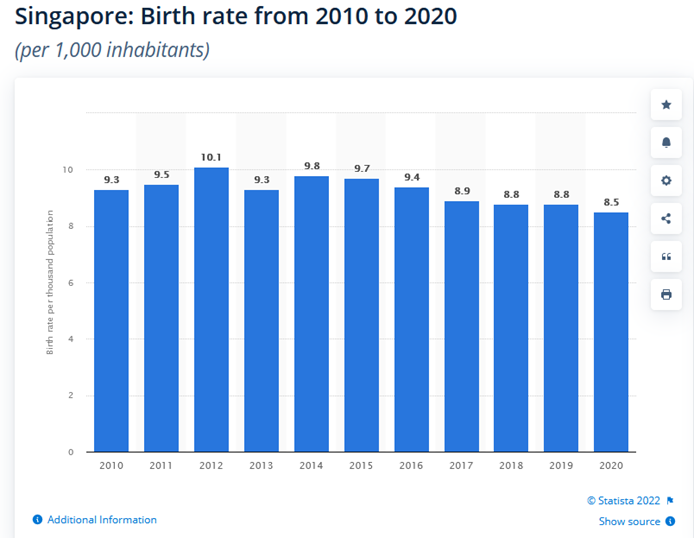
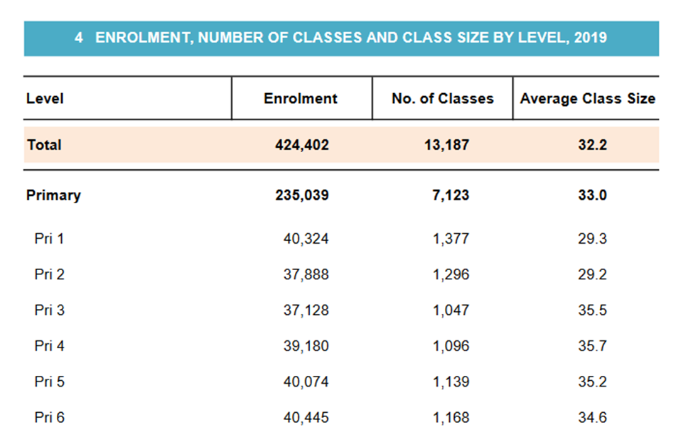
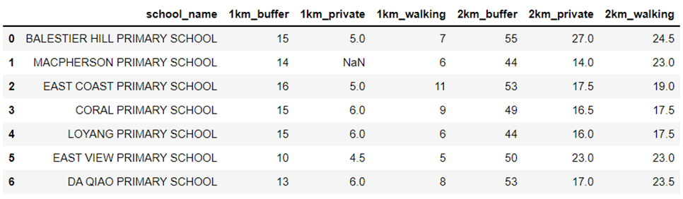
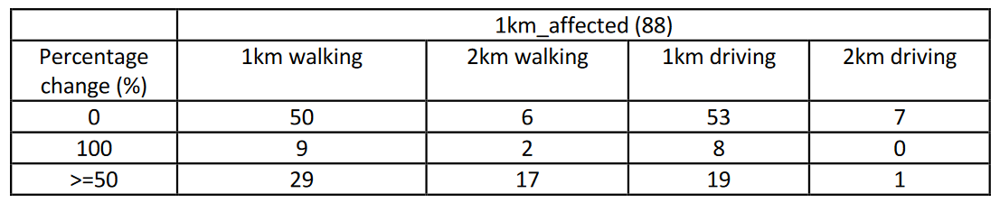
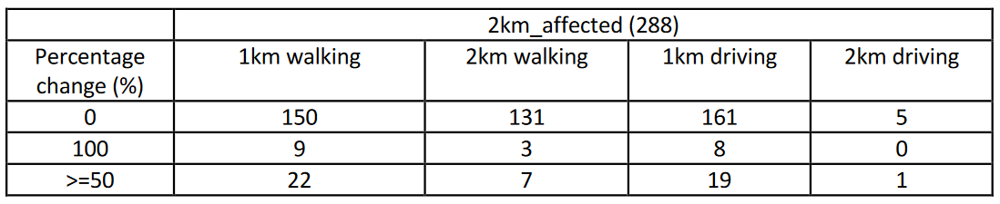

Analysis and Discussion
Here’s the link to our project report.
Data Analysis
Subzone Analysis of Students to School Ratio

The number of primary schools are represented by red hue, and the number of primary school students
are represented by blue hues. Therefore, the redder hue on the final image indicates that there are
more schools in that particular subzone compared to the relative number of students in the subzone.
Vice versa, the bluer the hue, the more student to school in the subzone. The darker regions indicate
that there are a lot of schools as well as a lot of students in the subzone. Analysis also shows that the
Malcom subzone has a lot of schools but relatively a lot fewer student count.
| Subzone with the most number of students | Woodlands East (1150), Tampines East (1130) |
| Subzone with the most number of schools | Tampines East (7), Yunnan (5), Woodlands East (5) |
According to Statista, the enrolment has been showing a downward trend since 2011 and only sees a
small spike in 2019.

This data is in line with the data for declining birthrate since 2015 as shown below.

In the table taken from Education Statistics Digest 2020, we can see the enrolment number and number
of classes with average class size for 2019.

Therefore, with a downward trend of students in schools coupled with declining birth rate, it is
reasonable for schools to close/merge to provide quality education to the students.
Number of Affected Residentials due to Merger
In order to clearly analyze the number of affected residentials due to the closure of the 7 primary
schools in 2019, the data that has been manually calculated from the data collection portion of this
study has been imported into a Python file so that the data will be more clearly represented. This
screenshot below shows a data frame of the affected residentials:

Since the buffer zone covers a greater area as compared to the output polygons created from QNEAT3,
there is a larger number of affected residentials represented by the buffer zone and is about 2 to 3 times
as large as the number of residentials represented by the output polygons.
When looking from the 1km proximity distance from the closed schools, the closure of schools could
affect up to 16 residential areas (taken from the closure of East Coast Primary School). When looking
from the 2km proximity distance from the closed schools, the closure of schools could affect up to 55
residential areas (taken from the closure of Balestier Hill Primary School). From just looking at the data
collected by using the buffer method, an average of 14 and 50 residential areas are affected within a
1km and 2km buffer respectively.
With 3 closures in the East, 3 closures in the Central and 1 closure in the North, we have taken a closer
look at the subzone analysis that we have previously done. In the Eastern region of Singapore nearer
towards the Tampines and Pasir Ris subzones, the proportion of schools to students in these areas are
one of the greatest as compared to the other subzones of Singapore. By closing 3 schools, this would
make sense to reduce the school count and balance the ratio of schools to students in the area. In the
Central region and especially where East Coast Primary School and Macpherson Primary School were
once located, the subzones also mostly show a larger proportion of schools to students, which does
correspond to the government's decision to close these 2 schools. However, Balestier Hill Primary
School (located centrally) and Da Qiao Primary School (located in the North) have subzones where the
ratio of schools to students are roughly equal as compared to all the subzones in Singapore. By using the
same deduction, the closure of these 2 schools would result in a higher student to school ratio, equating
to a lack of access to schools in these subzones due to high enrolment rates (assuming students apply
for schools near their residential areas).
Number of Schools Accessible After the Merger
We also wanted to quantify the impact of school closures for each residential centroid, specifically
looking at the change in the number of primary schools accessible based on a transport mode. As the
top 2 transport modes of primary school students were by walking and driving
(https://www.singstat.gov.sg/find-data/search-by-theme/population/mode-of-transport/visualising-
data/mode-of-transport-dashboard), we looked at both. We looked at the percentage change
(reduction), instead of the absolute difference as it gives a more accurate representation of how
residents are affected.
Of the 88 affected residentials that are within 1km proximity of the closed primary schools, we
discovered that 3/5 of them still have the same number of primary schools accessible, by walking, within
1km from where they live (ie a change of 0%). A tenth of them had to walk beyond 1km but not more
than a driving distance of 2km. An interesting note is that due to the short distance travelled, the change
in accessibility did not vary much between the two different transport modes. One obvious difference
between walking and driving is that the residentials who walked had a greater proportion of more than
50% reduction in accessibility. This means that while there is some disruption to the residents'
accessibility, the impact is not too great.

Of the 288 affected residentials that are within 2km proximity of the closed primary schools, there is
undoubtedly a larger proportion of them being unaffected by the closures as compared to the
residentials above. The only proportion that remained unchanged is when the travelling distance is 1km.

Limitations
Calculation of Affected Residentials
The first limitation of this method is that due to human error of tracing the polygon, the number of
residential centroids may differ slightly from each user to another user. In order to reduce this error, we
can zoom in to the polygon as close as we can to trace the shape as accurately as possible. The second
limitation is that the distance between two schools may be so close that the polygons may intersect one
another, which would lead to inaccurate results. In order to reduce this limitation, we can try to find an
equal distance between both schools and split the polygon into half.
Use of (Centroids of) Hexagonal Grids to Represent Affected Residentials
By using hexagonal grids to represent groups of residential landuse areas on the mainland layer, it
creates an inaccuracy of the number of residential buildings that have truly been affected by the closure
of the schools. In addition, even though some parts of the grid may be covered by the buffer or output
polygons, the hexagonal grid will not be selected if the centroid does not overlap. Therefore, the size of
the hexagonal grid used is a limitation that we had to consider as assigning a centroid to each residential
landuse area/building would have been computationally too intensive.
Method of finding Shortest Path and Fastest Time
A limitation of this method that we encountered was that some of the output polygons that we
produced were abnormal in terms of how it was formed on the map. This resulted in inaccurate data
that was produced for the number of affected residentials. This meant that the data had to be represented by NA. A possible alternative would be to use the Distance Interval method, but it is also
computationally intensive.
Lessons Learnt
Tristan's:
• Geospatial Analysis is an essential tool for human visualization of the number of schools that are
in someone's proximity area, and how fortunate Singaporeans are that their children have
relatively easy access via walking or private transport to schools
• Most subzones in Singapore have a higher proportion of schools to students, which also show
how students currently will most likely be able to enroll into a school in their residential area.
This also shows why the government may be closing some schools in order to ensure that the
ratio of schools to students is not too large
• In order to maintain the equity of enrolment and registration of P1 students into schools,
residentials that have no or limited access to schools due to the closure of schools within a
certain proximity distance should be given priority in terms of enrolment and registration.
Mahn Yin's:
• Having done the analysis on the subzone and primary school made me appreciate the
meticulous planning done by the relevant parties even more
• Accessibility to schools should not be taken for granted – every child in Singapore is guaranteed
access to education, yet some countries struggle to provide education for even a fraction of
their children.
Jia Xuan's:
• Accessibility to schools can be measured in different metrics. My project group decided to focus
on one metric, which is the number of points (schools/residential centroids). Despite having only
one metric, we approached itfromn two different perspectives for a deeper insight into our
chosen subtheme. This reminded me of how there will always be different perspectives to a
single subject, and we should never stick to just one
• There would always be unfairness in any decision, as shown in how some residentials were
affected more by the school closures than others. Tradeoffs will also be incurred, but they can
be balanced out
Future Works
With Singapore expanding her bus and train networks, our work can be extended to include an
analysis of students' accessibility via public transportWith past and future closures/mergers before and beyond 2019 respectively, future work can be
done to identify possible patterns as to why closures and mergers happen in designated
subzone areas around SingaporeLooking at mergers and closures of other educational institutions such as secondary schools and
junior colleges, and analyze if the extent of decreased accessibility is greater or lesser for these
institutions could be an extension of our current workAble to explore the correlation between different demographic groups and their accessibility to
schools due to mergers and closures